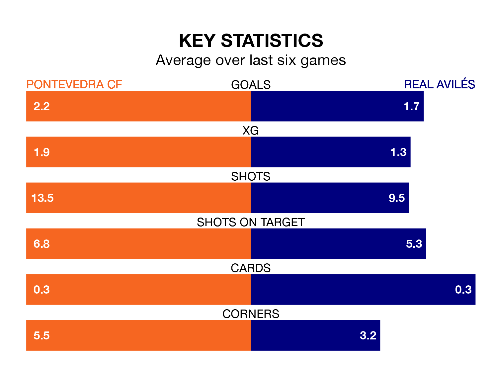

Real Avilés face Pontevedra CF on Sunday seeking to protect their long unbeaten run in the Segunda División RFEF Group 1.
Avilés are unbeaten in seven, with three wins and four draws, ahead of the 4pm kick-off.
They face a Pontevedra team who have won five and drawn one over the same number of games.
With 55 goals in 25 games so far this season, Pontevedra are the league's highest scorers with 2.2 goals per game. And they are conceding fewer than average, letting in 21 goals at a rate of 0.8 per game.
Avilés are also above average scorers, with 1.2 goals per game, compared to a league average of 1.1. They have conceded 1.0 goal per game.
The hosts are second in the table after 25 games, of which they have won 15 and drawn seven, earning 52 points.
The away side are six places behind Pontevedra in eighth, with seven wins and 13 draws putting them on 34 points.
In the last three years, Pontevedra and Avilés have played each other on three occasions. Pontevedra won two of them and they drew once.
Their last meeting was on October 29, when they played out a 1-1 draw.
Pontevedra's last match was on March 3, a 3-2 win against Real Oviedo B, with Dalisson de Almeida Leite getting the goals for Pontevedra.
Avilés beat Coruxo 4-0 last time out, also on March 3, with Claudio Medina Ricoy (two) and Néstor Senra Pérez on the scoresheet.
Updated: 09:34 (UTC), 08/03/24